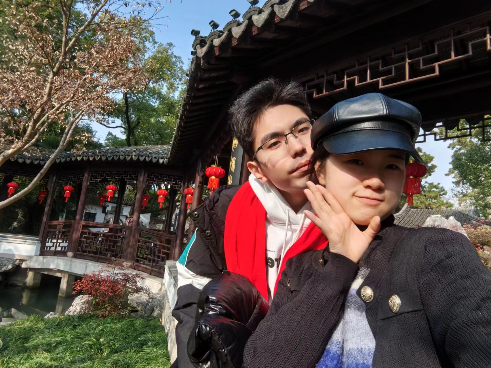

情人节快乐
 在宁波的记忆太多太好了，以至于我选照片的时候很是纠结，最终选择全拼在一起，一点都舍不得放下。宝宝，你把所有最好的东西，都分享给我了，同时分享给我的，还有你的童年，你的记忆，你来时的路。我完完全全地读懂了你给我的爱意，每每想起我们经历的点点滴滴，都会被汹涌的幸福感包围。你给我买早餐后的草莓，带我坐出租车逛宁波，带我走过你的初中和小学，给我带鸭舌头、小鱿鱼，带我做美容，在万达说全场王姐买单……太多太多事情在我心里放着，太多太多回忆让我热泪盈眶。你是那么炽烈的爱着我，一如我爱你。我深爱着你，同时也爱上了这座城市。当你在月湖的时候，说将来我们也带小孩子来这里，天知道我有多幸福。纸短情长，再华丽的辞藻也形容不了我对你的爱，我一定会和你一起走过最幸福最圆满的人生，执子之手，白头偕老。当我们走到生命尽头的时候，回头看这一路的风景，天知道我们会有多幸福。
在宁波的记忆太多太好了，以至于我选照片的时候很是纠结，最终选择全拼在一起，一点都舍不得放下。宝宝，你把所有最好的东西，都分享给我了，同时分享给我的，还有你的童年，你的记忆，你来时的路。我完完全全地读懂了你给我的爱意，每每想起我们经历的点点滴滴，都会被汹涌的幸福感包围。你给我买早餐后的草莓，带我坐出租车逛宁波，带我走过你的初中和小学，给我带鸭舌头、小鱿鱼，带我做美容，在万达说全场王姐买单……太多太多事情在我心里放着，太多太多回忆让我热泪盈眶。你是那么炽烈的爱着我，一如我爱你。我深爱着你，同时也爱上了这座城市。当你在月湖的时候，说将来我们也带小孩子来这里，天知道我有多幸福。纸短情长，再华丽的辞藻也形容不了我对你的爱，我一定会和你一起走过最幸福最圆满的人生，执子之手，白头偕老。当我们走到生命尽头的时候，回头看这一路的风景，天知道我们会有多幸福。
第一次在街头唱歌，很幸运是和你一起。这好像是我的一个人生理想，但我一个人的时候始终没有勇气去做，这勇气是你借给我的。我们选了七里香这首歌，从某种程度上来说，你真的是我的初恋。我从来没有这么热烈的爱着一个人，也从来没有过这么坚定、这么勇敢。“初恋的香味就这样被我们寻回”，谢谢你，让我知道什么是爱，让我学会怎么去真正爱一个人。当唱到“我此刻却只想亲吻你倔强的嘴”的时候，我转头想去亲你，你躲了一下。你知道的，我确实就是想吻你千遍万遍。写到这里，想到我们已经好久好久没亲亲了。想把我的吻献给你，我的爱人，我的初恋。